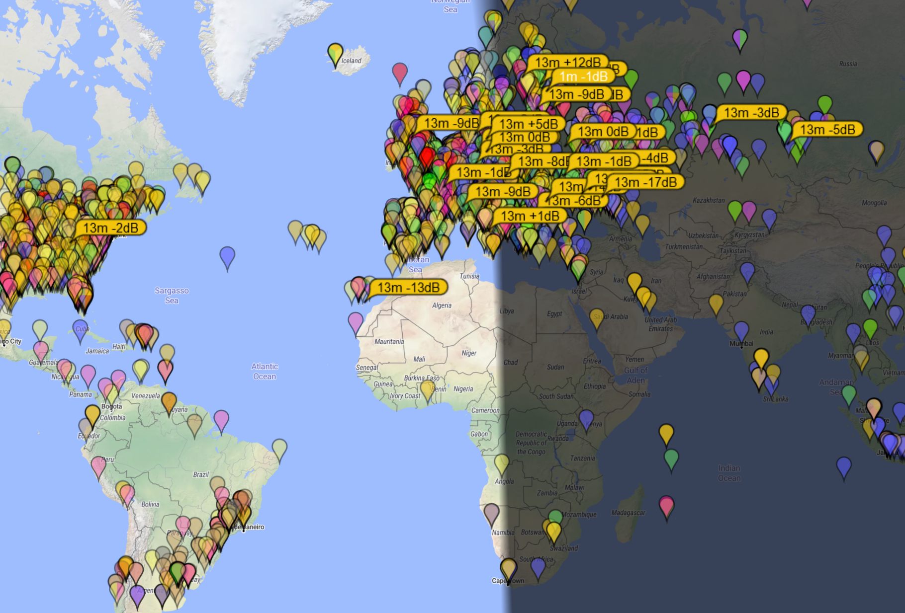

And now no spots at all on any band (with PLENTY of callers). I'm very suspicious; if they actually had power restored, by now they would be on multiple bands and likely would have uploaded the logs (haven't yet after a day).
I guess we'll see; at least there is a hunt... :-)
I did get (20M) exactly ONE decode with their call, at -16 (suddenly there and gone?); but it was not F/H mode (probably) but a single targeted call.
Work first, worry later; they are on site for a couple weeks.
73,
Rick NK7I
With the power outage reported earlier today for the team, I'm suspicious.
Here is PSK Reporter for all bands; showing activity only on 20M ... Note the concentration on EU and the signal levels reported... Is that a beam pointed at them or a local EU?
I'm printing a couple R-xx responses (one FL, another France), but since I can't hear the team...
But hey, we're in a hunt again, even if Slim is active.
73,
Rick NK7I
On 3/16/2021 10:00 AM, Dennis Moore wrote:
I see ops from this area calling them on both 17 and 20, but I haven't heard a peep. The one 6 station I saw give a report was out of Florida.
Dennis NJ6G
On 3/16/2021 09:48, Rick NK7I wrote:
I'm printing a lot of callers, only saw one R-xx report being sent.
"Slim" odds? ;-) PSK Reporter shows the station to be on 14.090 (missed a zero, sorry).
73,
Rick NK7I
_._,_._,_
Groups.io Links:You receive all messages sent to this group.
View/Reply Online (#847) | Reply To Group | Reply To Sender | Mute This Topic | New Topic
Your Subscription | Contact Group Owner | Unsubscribe [Rick.NK7I@gmail.com]
_._,_._,_